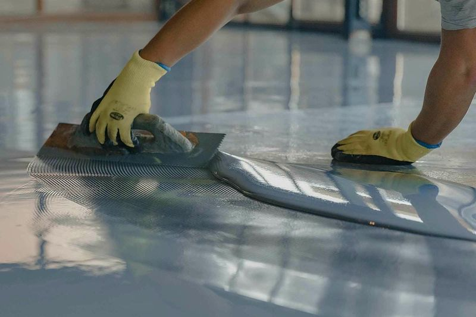

Epoxy Flooring Systems
Durable, Seamless Floors Engineered for Your Facility's Chemical, Thermal, and Traffic Demands
Your Concrete Floor Is Taking Damage Every Shift. Cracks, Dusting, Chemical Stains, and Trip Hazards Are Getting Worse.
Bare concrete was never designed to be a finished floor surface. It is porous, absorbs chemicals, dusts under traffic, and cracks under thermal movement. In a manufacturing plant, a food processing facility, or a high-traffic warehouse, unprotected concrete becomes a maintenance liability within the first few years — and a safety hazard shortly after.
Epoxy flooring systems solve this by creating a seamless, non-porous, chemically resistant surface over the concrete substrate. The result is a floor that resists chemical spills, withstands forklift traffic, meets sanitary requirements, and can be cleaned and maintained efficiently for 10 to 20 years.
But not all epoxy floors are the same. The right system depends on your facility's specific demands: the chemicals your floor is exposed to, the traffic it handles, the temperatures it endures, and the regulatory standards it must meet. FX Coating installs five distinct flooring systems — each engineered for a different performance envelope.
FX Coating Flooring Systems
FX Epoxy is the foundation of our flooring lineup. A high-build epoxy system applied at 1.5 to 3 mm thickness, FX Epoxy delivers excellent chemical resistance, abrasion resistance, and adhesion to properly prepared concrete. It is the right choice for warehouses, distribution centres, manufacturing floors, and mechanical rooms where the primary demands are durability and chemical resistance without the need for thermal shock tolerance. Available in a range of colours with optional anti-slip aggregate.
FX Quartz adds broadcast quartz aggregate to the epoxy matrix, creating a textured, highly durable surface with superior anti-slip performance. Applied at 3 to 6 mm, FX Quartz is specified for environments where slip resistance is critical — wet processing areas, commercial kitchens, brewery floors, and loading docks. The quartz broadcast also increases the system's impact and abrasion resistance, making it suitable for areas with heavy pallet jack and forklift traffic.
FX Shield is our premium flooring system — a polyurethane concrete (PU concrete) that operates in a different performance class from standard epoxy. Applied at 6 to 9 mm thickness, FX Shield withstands thermal shock from -40 to +120 degrees Celsius, resists steam cleaning, and tolerates moisture vapour transmission from the concrete slab. It is the system of choice for food and beverage processing facilities, dairy plants, meat processing floors, and any environment with aggressive wash-down protocols. USDA and CFIA compliant for incidental food contact.
FX Flakes incorporates decorative vinyl flake chips into the epoxy matrix, creating an attractive, textured surface that hides minor imperfections in the substrate. FX Flakes is commonly specified for commercial environments — showrooms, retail spaces, dealership service bays, lobbies, and light-duty industrial areas where appearance matters alongside durability. Available in dozens of colour blends.
FX Quartz Decorative combines the durability of quartz broadcast with a decorative colour palette. This system is used in high-traffic commercial and institutional environments — healthcare corridors, educational facilities, recreation centres, and corporate lobbies — where both aesthetics and heavy-duty performance are required.
Choosing the Right System for Your Facility
The correct epoxy flooring system depends on the answers to four questions:
- What chemicals will the floor be exposed to? Dilute cleaning agents require a different chemical resistance profile than concentrated acids, caustics, or organic solvents. FX Shield handles the most aggressive chemical environments; FX Epoxy and FX Quartz are sufficient for moderate chemical exposure.
- What are the thermal conditions? If your floor is subject to steam cleaning, hot water wash-down, or extreme temperature cycling, FX Shield is the only system that will survive. For ambient-temperature environments, FX Epoxy or FX Quartz are the cost-effective choice.
- What level of traffic will the floor handle? Heavy forklift traffic with steel wheels demands a thicker, harder-wearing system. FX Quartz and FX Shield provide the impact resistance needed for the heaviest industrial traffic. FX Epoxy handles moderate forklift and pallet jack use.
- Does appearance matter? For customer-facing or employee-facing environments where aesthetics influence the space, FX Flakes and FX Quartz Decorative deliver a polished, professional look without sacrificing durability.
Industries We Serve with Epoxy Flooring
- Food Processing — CFIA and USDA compliant flooring for production areas, cold storage, packaging lines, and wash-down zones
- Manufacturing — chemical-resistant, abrasion-resistant floors for production areas, assembly lines, and warehouses
- Grain Elevators and Agriculture — durable flooring for elevator pits, processing floors, milking parlours, and bulk storage areas
- Wastewater Treatment — chemical containment flooring for process areas and pump rooms
The Surface Preparation Difference
Every FX Coating epoxy floor installation begins with proper substrate preparation to SSPC-SP13/NACE 6 standards. This is not optional. Shot blasting or scarification creates the concrete surface profile (CSP-3 to CSP-5 for epoxy systems, CSP-5 to CSP-7 for polyurethane concrete) required for mechanical adhesion. Without this step, even the best epoxy system will delaminate within months.
We also test for moisture vapour transmission, existing coating adhesion, and substrate contamination before installation. If the concrete is not ready for a coating, we address the substrate issues first — rather than installing a system that will fail.
Frequently Asked Questions
How long does an industrial epoxy floor last?
An industrial epoxy floor installed by FX Coating typically lasts 10 to 20 years depending on the system selected and the severity of the environment. FX Shield polyurethane concrete floors in food processing facilities can exceed 20 years. FX Epoxy systems in warehouses and manufacturing plants typically deliver 10 to 15 years of service life. The critical factor is surface preparation — a floor installed over a properly prepared substrate to SSPC-SP13 standards will dramatically outlast one applied over inadequately profiled concrete.
What is the difference between epoxy and polyurethane flooring?
Epoxy and polyurethane are different chemistries with different strengths. Epoxy systems like FX Epoxy and FX Quartz provide excellent adhesion, chemical resistance, and abrasion resistance at a competitive price point — they are the workhorse of industrial flooring. Polyurethane concrete systems like FX Shield offer superior thermal shock resistance, flexibility under temperature cycling, and tolerance for moisture vapour transmission. FX Coating specifies the right chemistry for your environment: epoxy where conditions allow, polyurethane concrete where thermal shock or steam cleaning demands it.
Can epoxy flooring be installed over existing coatings?
In some cases, yes — but only after thorough adhesion testing and surface preparation. If the existing coating is well-bonded, properly profiled, and compatible with the new system, an overlay may be feasible. However, if the existing coating is delaminating, contaminated, or incompatible, it must be fully removed before the new system is applied. FX Coating performs adhesion pull tests and moisture testing on every project to determine the correct approach.
How much does industrial epoxy flooring cost in Ontario?
Industrial epoxy flooring costs depend on four primary factors: the system selected, the condition of the existing substrate, the total square footage, and any specialized requirements such as chemical resistance or food-grade compliance. A basic FX Epoxy system for a warehouse floor will cost significantly less per square foot than an FX Shield polyurethane concrete system for a food processing facility. FX Coating provides detailed, itemized quotes after a free site assessment — we do not give ballpark numbers without seeing the substrate and understanding the requirements.
Get the Right Flooring System for Your Facility
Our team will assess your substrate, chemical exposure, traffic patterns, and performance requirements to recommend the epoxy flooring system that delivers the longest service life at the right price point.